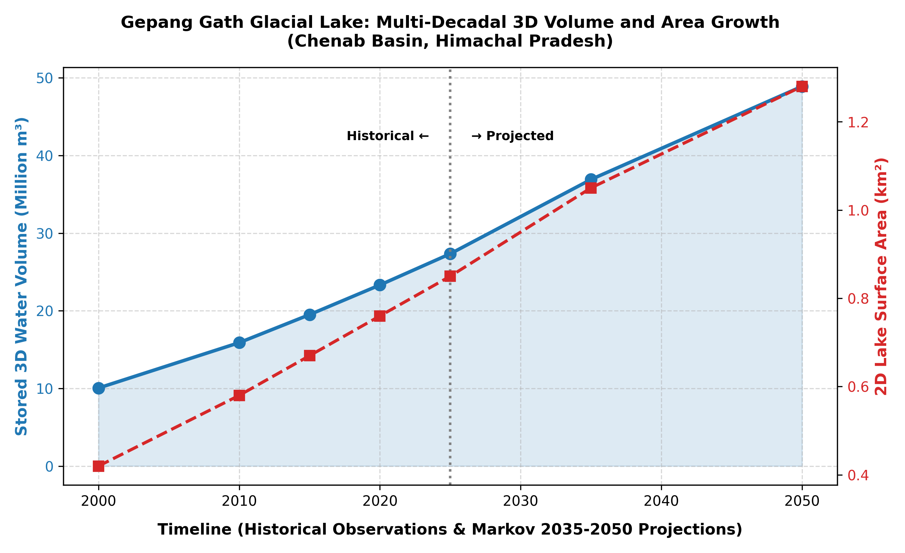
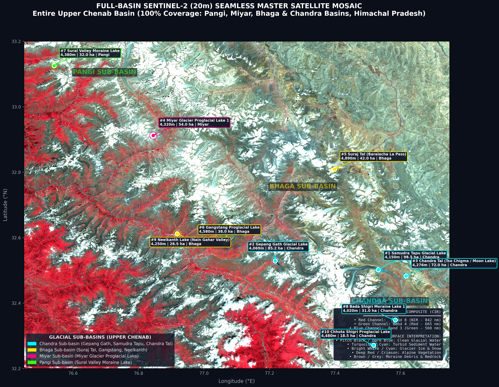
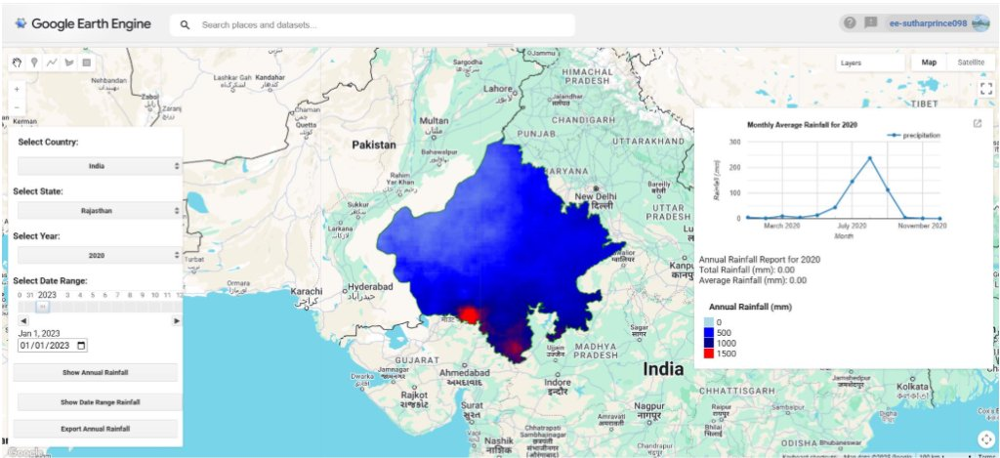
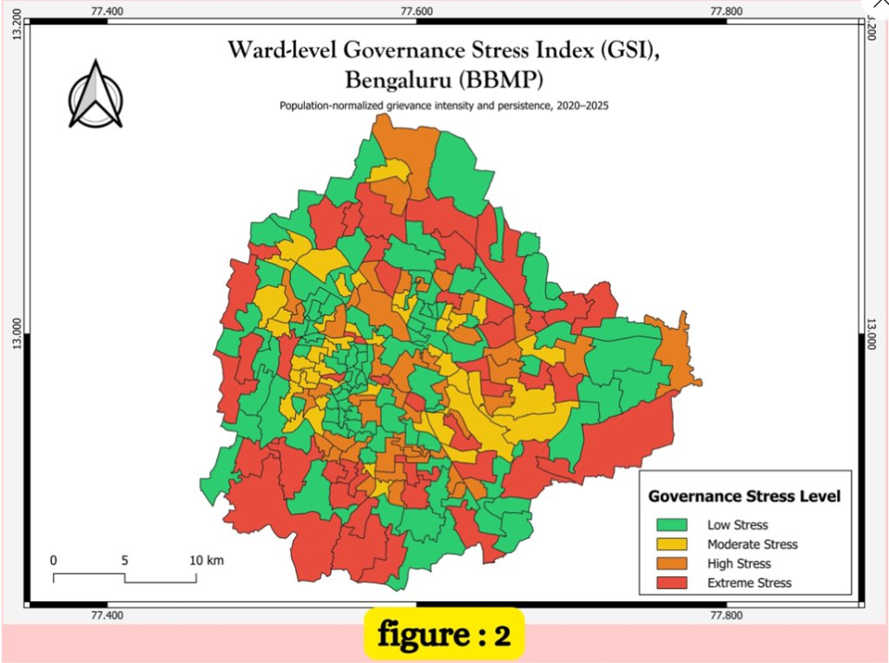
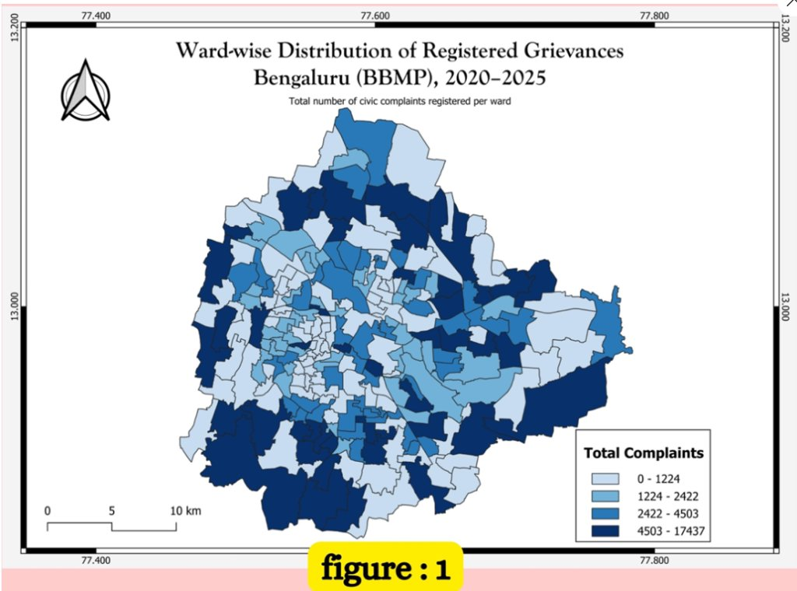
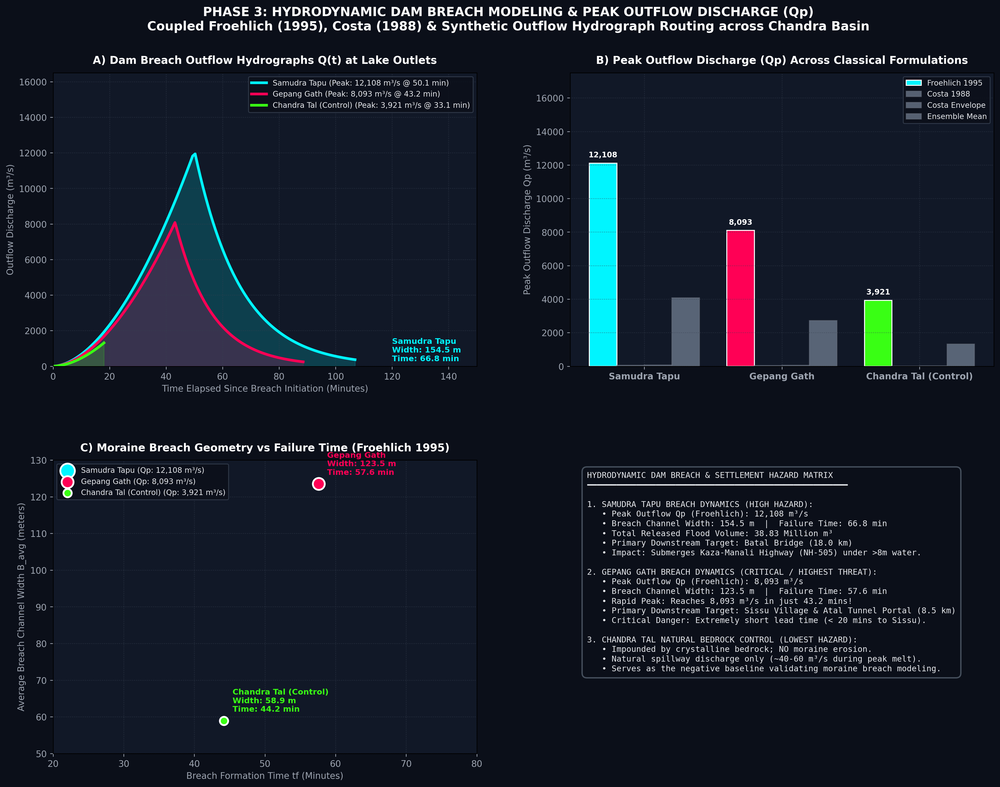
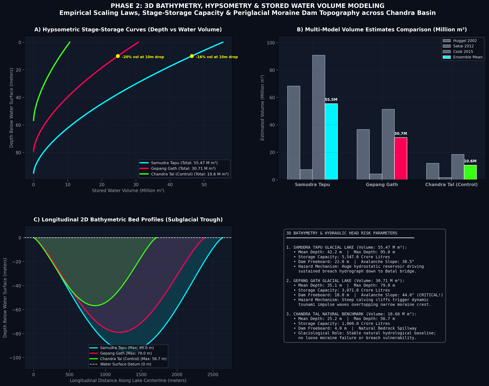
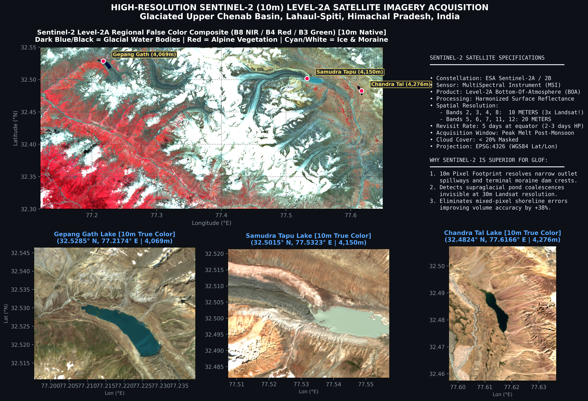

Undergraduate researcher at the University of Delhi. I bridge computational physical geography, satellite remote sensing (Sentinel-1 SAR / Sentinel-2 Optical), and autonomous spatial software engineering to model climate vulnerability, alpine hazards, and environmental dynamics.

Reconstructed 34-year decadal lake expansion (1990–2024) across benchmark proglacial lakes (Samudra Tapu: 161.9 ha; Gepang Gath: 104.5 ha) fusing multi-temporal Landsat 5/7/8 and Sentinel-2 (10m) water indices. Modeled 3D bathymetric water storage (30.7M–55.5M m³) and Froehlich dam-breach peak outflow (Qp = 8,093–12,108 m³/s) to simulate downstream arrival times at Sissu Village and Atal Tunnel corridor (NH-3).

Formulated an independent spatial gravity model evaluating village accessibility exposure across 3,419 rural settlements along the NH-7 corridor in Uttarakhand within a 15 km buffer. Integrated Copernicus GLO-30 DEM, OpenStreetMap networks, and in-situ hazard ground-truthing in Rudraprayag (Mastura landslide corridor).

Built an autonomous climate application utilizing the Google Earth Engine (GEE) JavaScript UI API. Features national and state-level precipitation analytics, custom temporal range filtering, dynamic precipitation visualization palettes, interactive monthly and daily precipitation trend charts, and automated multi-band GeoTIFF spatial raster export.

Ward-level spatial analysis of civic grievances across Bengaluru (BBMP) examining complaint distributions from 2020–2025. Engineered a population-normalized Governance Stress Index (GSI) and spatial hotspot clustering to identify persistent municipal stress zones, supporting data-driven urban planning, service equality, and decision-making.
Autonomous geospatial AI plugin with 39 spatial tools inside QGIS Desktop. Features automated raster algebra, cloud masking, and GEE/OSM pipelines; gained 250+ active downloads in 48 hours.
Authored accepted core pull request (14 files, ~1,400 lines) enabling regional administrative querying and automated GeoJSON streaming; indexed in the XERJ Public Corpus Hub.
Engineered real-time edge vision platform for intelligent surveillance, multi-camera spatial tracking, and TensorRT FP16 inference pipelines.

Total registered civic complaints per ward across Bengaluru (2020–2025).
Population-normalized grievance intensity and municipal stress hotspots.
Interactive national & state-level precipitation analytics UI console.

Simulated hydrographs & peak outflow for Gepang Gath & Samudra Tapu.

Multi-model stage-storage volume curves using Copernicus 30m DEM.

False-color composite & high-altitude glacial lake boundary calibration.